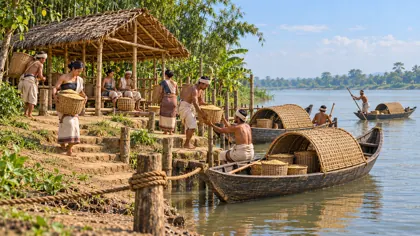
Upper Assam, circa 1750
A working river landing
Unnamed representative location; river course, shelter and traffic arrangement are interpretive. Modern boat form is comparative only.
c. 1750
Eight sets on how ordinary people worked: the river and its boats, craft workshops, the household, market day, writing chronicles, preparing for war, building, and two monuments then and now.
Research-informed artistic interpretations, not authenticated reconstructions. Two modern photographs are included unchanged for comparison. AI-generated interpretation, not a reconstruction or a historical record.
Chapter: The Tungkhungia kings

Upper Assam, circa 1750
Unnamed representative location; river course, shelter and traffic arrangement are interpretive. Modern boat form is comparative only.
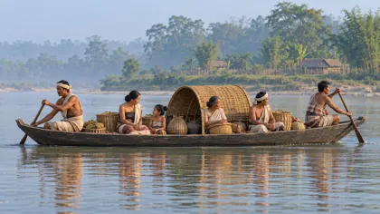
Upper Assam, circa 1750
Passenger arrangement, hull dimensions and ferry operation are interpretive; not a technical safety diagram.
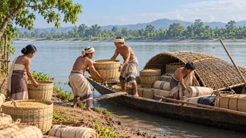
Upper Assam, circa 1750
Specific cargo and loading method are plausible artistic choices, not a reconstruction of a recorded shipment.
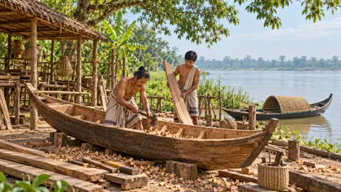
Upper Assam, circa 1750
Exact joinery, fastening system and tools are interpretive. Modern boat analogy does not establish unchanged construction.
Upper Assam, circa 1750
Composite exchange place, not the surveyed plan of a named historical market.
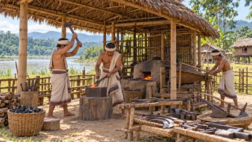
Upper Assam, circa 1750
Hearth, bellows and tool arrangement are interpretive; occupation documented, specific workshop not authenticated.
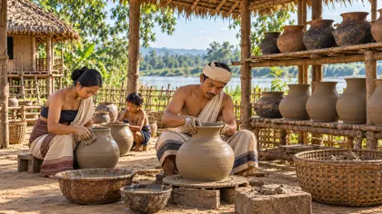
Upper Assam, circa 1750
Hand-forming is chosen to avoid imposing one community’s wheel technology on all Assam; exact technique and community are unspecified.
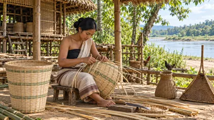
Upper Assam, circa 1750
Modern craft documentation supplies comparative basket geometry, not proof of exact eighteenth-century weave.
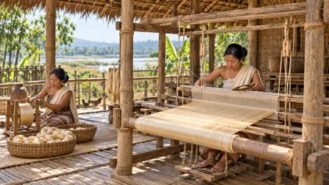
Assam plains, circa 1750
Exact loom details, textile pattern and workshop are interpretive. No claim that colour alone authenticates a silk species.
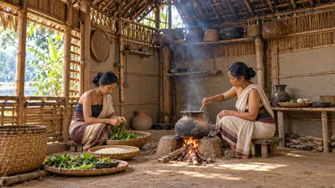
Upper Assam, circa 1750
Kitchen layout and ingredients are interpretive; museum comparison is not a dated eighteenth-century household.
Upper Assam, circa 1750
Serving arrangement, menu and family grouping are artistic interpretation, not universal customary practice.
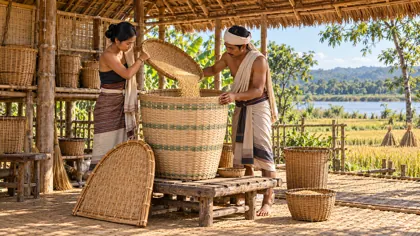
Upper Assam, circa 1750
Storage form and elevated arrangement are comparative interpretations; no authenticated floor plan.
Upper Assam, circa 1750
Specific activity and lighting arrangement are artistic choices. No claim of a documented household or ritual.
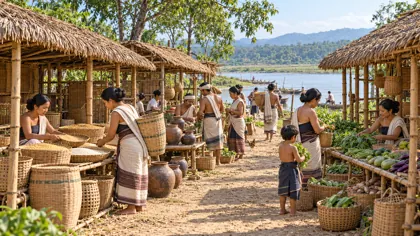
Upper Assam, circa 1750
Representative market concept; stall layout, frequency, dress and goods mix are not established for a named place.
Upper Assam, circa 1750
Object assortment and transaction are interpretive; objects are not archaeologically dated specimens.
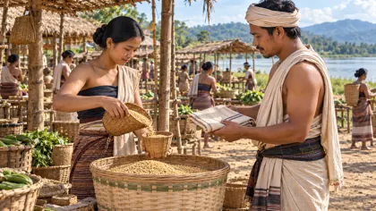
Upper Assam, circa 1750
Barter composition is an illustrative possibility, not proof that barter alone characterized the economy or that this exchange rate existed.
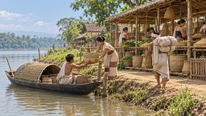
Upper Assam, circa 1750
Landing-to-market relationship and cargo are interpretive; not a mapped historical trading post.
Upper Assam, circa 1750
An imagined working scene, not a portrait of a named chronicler or a verified administrative chamber. No asserted content of the page.
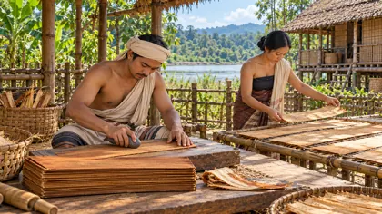
Assam, circa 1750
Selective illustration of preparation stages; timing, tools and exact sequence are interpretive, not a technical recipe.
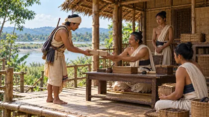
Upper Assam, circa 1750
Messenger costume, wrapping, room function and delivery procedure are interpretive; not an authenticated bureaucracy diagram.
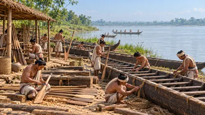
Ahom-controlled Brahmaputra valley, circa 1670
Small modern boat references supply material only, NOT scale or exact bachari design. Vessel geometry and dress remain interpretive.
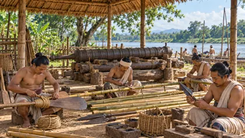
Ahom-controlled Assam, circa 1670
Photographed cannon is comparative and not individually dated to 1670; fittings, clothing and equipment grouping are interpretive.
Ahom-controlled Assam, circa 1670
The provisioning scene is inferred from a working camp; its exact layout, menu and service practices are unverified.
Ahom-controlled Brahmaputra valley, circa 1670
Lookout design and precise location are interpretive; not a reconstruction of a particular named fort or battle position.
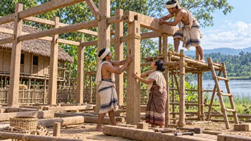
Upper Assam, circa 1750
Frame, joinery, platform and working method are illustrative, not a verified structural reconstruction.
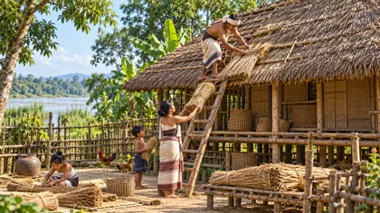
Upper Assam, circa 1750
Roof profile, fastening and work staging are comparative interpretation. Do not treat an earlier generated house as historical proof.
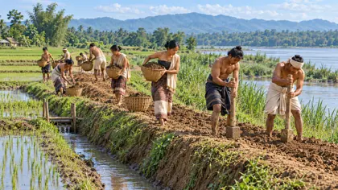
Upper Assam, circa 1750
Unnamed representative earthwork; no asserted alignment, dimensions, construction specification or flood-prevention effectiveness.
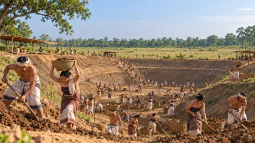
Rangpur area, Rudra Singha’s reign, circa 1696–1714
Sources disagree on 1697 versus 1707; reign-level date only. Tank attribution is documented; workforce, tools, basin profile and labour organisation are imagined. Do not claim an exact 45-day construction scene.
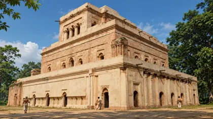
Garhgaon, circa 1760
Exterior silhouette derives from the surviving building; finish, missing details and surroundings are interpretive. Approximate match only, not survey-grade restoration.
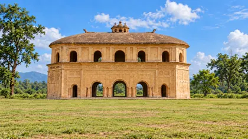
Rangpur, circa 1760
Historical finish, field and people are interpretive; matching is approximate. This is a secular pavilion, not a Hindu temple.
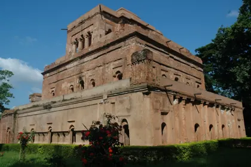
Modern photograph; capture date not verified
Modern reference photograph, not necessarily the site’s condition in October 2026. Attribution and licence retained in reference-records.json. Approximate comparison with generated historical view.
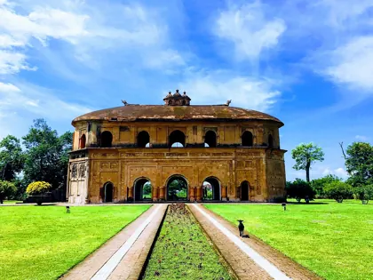
Modern photograph; capture date not verified
Modern reference photograph, not necessarily the site’s condition in October 2026. Attribution and licence retained in reference-records.json. Approximate comparison with generated historical view.